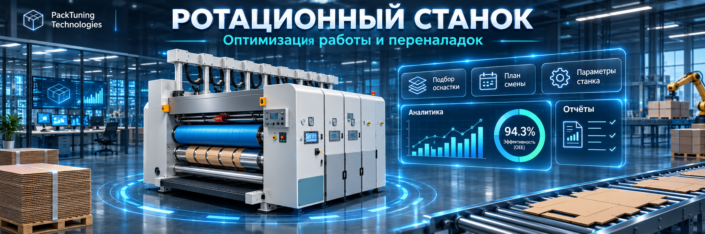

Заказы
Задайте тираж, срок, состав перегородок и фактический выпуск. Укажите, когда будет готов материал.

Производственный план без ручной сводки
Планируйте изготовление продольных и поперечных перегородок с учётом станков, экземпляров штампов, рабочих календарей и сборщиков. Сравнивайте даты готовности, находите просрочки и проверяйте загрузку на диаграмме Ганта.
От заказа к расписанию
Задайте тираж, срок, состав перегородок и фактический выпуск. Укажите, когда будет готов материал.
Настройте скорости станков, штампы, переналадки, смены, перерывы и доступных сборщиков или бригады.
Сохраните свою очередь или отдельно отсортируйте заказы по резерву времени. Запустите расчёт с возможностью отмены.
Просмотрите готовность заказов, выработку, просрочку и цветную диаграмму Ганта. Сохраните результат для следующего сеанса.
Возможности
Нормы в деталях в час, отдельные календари, разрешённые станки и переопределение производительности для штампа.
Учитывайте количество экземпляров, совместимость, установку, снятие и время передачи между станками.
Общий состав работников или неделимые бригады. Подготовка, передача, нормы на заказ и ограничение числа ресурсов.
Смены, перерывы и исключения. Высечка может продолжаться в следующем рабочем интервале с сохранением обработки.
Учёт уже высеченных деталей, собранных комплектов, начатых операций и занятости оборудования.
Таблица операций с сортировкой и фильтрами, Гант с масштабированием и просрочка в годах, месяцах, днях, часах и минутах.
Интерфейс программы
Один результат — в таблице и на диаграмме. Представления помогают проверить даты, ресурсы и выработку.
На иллюстрациях — контрольные заказы и условная производительность 6000 деталей/час. Числа эффективности на баннере являются частью оформления, а не результатом измерений.
Языки
Текущая Windows-версия работает на русском языке. Переключатель RU / EN меняет язык сайта и баннера; английский интерфейс программы предусмотрен для дальнейшего развития.
PackTuning
Расчёты и справочники хранятся локально, без обязательного сервера. Формат расчёта сохраняет исходные данные, настройки и результат. Подключение к другим программам PackTuning и импорт из ПОЯС развиваются отдельно.
Лицензии
Цены для программы «Ротационный станок». Бессрочная лицензия — на одно рабочее место.
| Тип лицензии | Цена |
|---|---|
| Бессрочная, 1 рабочее место | 79 000 ₽ |
| Аренда на 1 год | 19 900 ₽ |
| Аренда на 1 месяц | 1 990 ₽ |
Все цены указаны в российских рублях. Условия поставки и активации уточняются при заказе.
Покупка и активация
Комплекты PackTuning
Включение «Ротационного станка» в комплект и итоговые условия уточните у автора.
Вопросы и ответы
Изготовление продольных и поперечных перегородок на ротационных станках, обслуживание штампов и сборку комплектов.
Выбирается правило установки: перед каждой операцией, при смене штампа или при очередном заходе заказа. Снятие и передача штампа учитываются отдельно.
Да. Пользователь задаёт точный порядок вручную. Автоматическая сортировка по резерву времени запускается отдельной командой.
Да. Нажмите заголовок столбца для сортировки. Правый щелчок по ячейке позволяет оставить строки с выбранным значением; фильтры можно сочетать и сбрасывать.
Нет. Программа предназначена для локальной работы одного пользователя в Windows. Справочники и расчёты хранятся в файлах.
Напишите автору: vguberniev@gmail.com. Укажите задачу и желаемый тип лицензии.
В текущей сборке доступны таблицы, диаграмма Ганта и файлы расчётов. PDF и рабочие интеграции относятся к дальнейшим этапам разработки.
Контакты
Напишите, сколько у вас станков, как организованы смены и какие перегородки вы выпускаете.